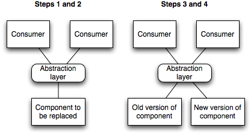

多くの開発チームはバージョン管理システムのブランチ機能を活用しています。 分散バージョン管理システムではブランチ機能がさらに便利に使えるようになりました。 結果として、継続的デリバリーの文脈で「ブランチを使っているなら継続的インテグレーションはできない」という意見が問題になったりしています。 元の定義によると、ブランチのコードは統合されていないことになるからです。 ブランチを使用するのが妥当だと思われる一般的な場面の1つに、大規模な改修が挙げられます。 ただし、それ以外にもブランチが役立つ場合があります。 「抽象化によるブランチ」という手法です。
抽象化によるブランチ：メインラインで段階的に大規模な変更を行うためのパターンです。
Paul Hammant はブログで Hibernate から iBatis へ移行する過程を具体的に説明しています。 また、私たちが ThoughtWorks で開発していた継続的インテグレーションとアジャイルなリリース管理ためのプラットフォーム Go は、1年以上かけて iBatis から Hibernate へ移行しました。 同時に Velocity と JsTemplate で構築した UI を JRuby on Rails へ移行しました。
どちらの変更もゆっくりと、段階的に行われていました。 新しい機能の開発も同時に進めていました。 Mercurial リポジトリのメインラインへ 1日に何回もチェックインしたものです。 どうやったと思いますか。
開発チームが iBatis から Hibernate への移行を決心した理由は2つあります。 1つ目は、自分たちでデータベーススキーマを管理できるようになったので、ORM を効率的に利用できるようになったことでした。 大量に独自の SQL を作成する時間を節約できます。 2つ目は、ORM のセカンドレベルキャッシュによる性能向上が期待できることでした。
もちろんコードベース全体を一気に移行しようとは思いませんでした。 新しい機能を追加するとき、新しいデータベースクエリは Hibernate で作成しました。 iBatis で実装したクエリを使うときは、それを Hibernate に移植しました。
永続化処理を段階的に更新する方法としては比較的単純ですが、Go のコードベースは標準的なレイヤーアーキテクチャだったので妥当な方法でした（コントローラーがサービスを使用し、サービスがリポジトリを使用する）。 データベースにアクセスするコードは、リポジトリパターンに基づくリポジトリクラスへカプセル化されていたので、それぞれのクラスを順番に iBatis から Hibernate へ移行するのは簡単でした。 もちろん、サービスレイヤーは永続化フレームワークの変更による影響を受けません。
同僚の Pavan K S は次のように述べています。
抽象化によるブランチに必要なのは、開発者が古いやり方のコードを追加しないようにすることです。 経験則のようなものですが、たとえ iBatis で実装したクエリのほうが簡単だったり速かったりするとしても、Hibernate で実装しなければなりません。 それが移行を前に進める唯一の方法なのです。 このやり方を徹底するため、iBatis のデータベースクエリを追加したらビルドを失敗させることもできるでしょう。 減らすのはいいですが、増やすのはダメです
同じように、Java ベースの UI を JRuby on Rails へ移行したいと思っていました。 そのほうが、UI の開発を加速するためのテストが書きやすかったからです。 やはり、変更は段階的に行うようにしました。 新しい画面を追加するときは JRuby on Rails で作成し、利用できるようになったら元のアプリケーションへ新しい画面へのリンクを追加しました。
ある画面を大幅に変更しなければならないときも、JRuby on Rails で作成するようにしました。 そして、新しい画面が利用できるようになったら、元のアプリケーションの保持する URI を新しい画面の URI へ変更しました。 この時点で元の画面を削除しました。 結果として、Go のほとんどの画面を JRuby on Rails で実装しても、以前に Java で実装した画面はいくつか残っている状態になりました。 しかし、リンクを辿るだけではどうやっても残りの画面にアクセスできません。スタイルが違うからです。 URI をよく見ると、Velocity の画面にアクセスする URI のパスは /go/tab から始まるようになっています。 それ以外の URI は全て JRuby on Rails へ転送しますが、利用するサービス実装は同じままです。
抽象化によるブランチで大規模な変更を段階的に適用するやり方は次のとおりです。

Martin Fowler はこの一連の手順にはさまざまなバリエーションがあることを指摘しました。 「最も単純なのは、全てを網羅する抽象化層を用意して、全ての部分をリファクタリングして、新しい実装に切り替える方法です。 しかし、分解する方法はいろいろあります。 抽象化層で包み込んだ一部の機能だけを新しい実装に移行して、それからまた別の機能を対象に移行することもできるでしょう（新しい機能と古い機能が共存する状態です）。 また、コードの一部が抽象化層を呼び出すようにしたまま、新しい実装と古い実装を残しておくこともできるのです。」
iBatis から Hibernate への移行に関する例では、リポジトリ層の手前に抽象化層を追加して、使用している永続化フレームワークという実装の詳細を隠蔽するようになっていました。 JRuby on Rails への移行に関する例では、サーブレットエンジンの手前に抽象化層を追加して、URI に基づいて、JRuby on Rails (Rack) と標準的な Java Servlet へ振り分けられるようになっていました。
Go は小規模なプロジェクトです。開発者は10人未満だし、たかだか数年しか使われていませんでした。 それでも、プロジェクトやチームの規模と関係なく、同じ原則に基づいて大規模な分散開発プロジェクトでもこのパターンを適用できました。
開発プロセスにとって、抽象化によるブランチを追加することが負担になるのは間違いありません。 特にコードベースが適切に構造化されていない場合は大変になります。 より慎重に考えなければならないし、段階的な変更をするにはより多くの時間が必要になります。 しかし、苦労の量より利点の方が勝る場合が多いはずですし、大規模なリストラをするときは抽象化によるブランチを検討する重要性が高まります。
抽象化によるブランチの主な利点は、リストラをしている間ずっと動作するコードを維持できるので、継続的デリバリーが可能になることです。 リリーススケジュールとアーキテクチャの変更を完全に分離できるので、ある時点でリストラ作業を中断し、機能追加など優先度の高い別の作業を進められるのです。
抽象化によるブランチをするときは出口戦略を用意しておくのも重要です。 大規模な変更を最後まで残しておくかどうかを選べるなら、最も重要な部分の移行が完了するまで残しておくこともできるでしょう。 複数の技術要素を扱っている場合、システムの保守は難しくなるし、実際にどこを利用しているのか理解するのが難しくなる場合もあります。 許容できるトレードオフではありますが、チーム全員に理解できるよう可視化しておいたほうがいいでしょう。
抽象化によるブランチは、大規模な変更をするためにバージョン管理システムでブランチを作成する「別の方法」と誤解しやすい名前です。 メインラインで機能追加やバグ修正を続けるため、大規模な変更をする別のブランチを作成するチームはたくさん存在します。 メインラインへのマージが困難であるとか、その難しさは変更量に応じて増加するとか、ブランチで作業している間にメインラインでも同じくらい作業しなければならないとか、そういう問題があります[1]。
[1] 分散バージョン管理システムを使えば簡単にマージできるのでブランチを恐れなくていい、という意見もありますが、誤解を招く意見だと言える2つの理由があります。 1つ目は、Martin Fowler が述べているとおり、マージを自動化するツールは意味的な衝突を解決できないことです。 2つ目は、ブランチの年齢が長くなれば、どんなに優れたツールを使ったとしてもマージが困難になるということです。 GitHub を少し探せばマージを待っているフォークプロジェクトがたくさん見つかりますが、メインラインから離れすぎているため、統合するには膨大な作業が必要になります。
つまり、バージョン管理システムのブランチを使用する方向の圧力が強ければ強いほど、最後にマージするときの苦痛も強くなってしまうのです。 ブランチでフィーチャを開発しているならさらにひどいことになります。 一般的にフィーチャや大規模な変更のためにブランチを使用するのは間違った考えだと言えるいろいろな理由があります。 最も影響力が強いのは、どちらも継続的デリバリーとリファクタリングをできなくしてしまうことです[2]。 Martin Fowler による素晴らしい文章「フィーチャブランチのどこが問題なのか」「フィーチャフラグの使い方」を読んでみてください。
[2] どんなルールにも例外は存在します。 ブランチの生存期間が極めて短い（1日未満）とか、小規模で経験を積んだチームなら、リリースやスパイク以外のブランチも許容されるでしょう。
バージョン管理システムでブランチを作ること全てを否定しているわけではありません。 アイデアを試してすぐに捨ててしまうような使い方には適しているでしょう。 また、リリース直前に小規模で重要なバグ修正をするためのブランチを作るのもいいでしょう。 しかし、継続的デプロイメントを実践しているチームにとってはどちらも嬉しくありません。 リリースに対する変更量が小さいため、問題をメインラインで修正して新しいバージョンを展開する（ロールフォワードする）ほうが、元に戻す（ロールバックする）より簡単だからです。
あなたのコードベースが大きな泥団子になってしまっているとしたら、ブランチで作業するのも容認できるでしょう。 抽象化層を作るのは極めて困難なため、（典型的な静的型付けのオブジェクト指向言語なら）まず一連のインターフェイスからなる「つなぎ目（seem）」を探して、それらを抽象化層に含めることになります。 つなぎ目が見つからないときは、一連のリファクタリングを通じて作成していくことになるのですが、何らかの理由でそれができないときは、ブランチを作成して作業することになります。 とてもエクストリームな作業です。
リファクタリングの定義は「外部から見たときの振る舞いを保ちつつ、理解や修正が簡単になるように、ソフトウェアの内部構造を変更させること」です。 つまり、抽象化によるブランチの例として説明した話はどちらもリファクタリングの例になっているのでした。 抽象化によるブランチは実質的にリファクタリングに関連するプログラミング作業であり、アプリケーションアーキテクチャを大幅に変更した結果なのです。 メインラインの開発でおそらく最も重要な利点は、ソフトウェアをいつでもリリースできる能力と、リファクタリングできる能力です。
抽象化によるブランチとフィーチャトグルを混同する場合が多いようです。 どちらも、メインラインで段階的な変更を可能にするパターンです。 フィーチャトグルは新しく追加した機能をユーザーから見えないままにするためのパターンです。 デプロイ時や実行時に、特定の機能や複数の機能をユーザーから見えるようにするかどうかを制御します。
抽象化によるブランチは大規模な変更を段階的に進めていく開発手法です。 フィーチャトグルと組み合わせることができます。 例えば、特定のデータベースアクセスについて、iBatis と Hibernate の性能を比較するため、実行時に切り替えるようなことができるでしょう。 普通は開発者が選択するので、ハードコードするか、ビルド時に決定するか、あるいは依存性注入フレームワークで設定する場合もあるでしょう。
ストラングラーアプリケーションも、段階的に既存のシステムを新しいシステムへ置き換えていくパターンです。 段階的にシステムの（コンポーネントの）実装を変更する抽象化によるブランチより、抽象度の高い戦術です。 サービス指向アーキテクチャではこれらの違いは曖昧になります。
もちろんです。 SOLID 原則を守っているコードには適用しやすいパターンです。 特に DIP（依存性注入の原則）とSIP（インターフェイス分離の原則）を守っている場合は特に簡単になります。 ISPは実装を切り替えるちょうどいい粒度になるので重要です。 同僚の David Rice は、抽象化によるブランチが特定のコンポーネントの実装を切り替える方法として「唯一の」の実用的なパターンであると述べています。 Martin Fowler も同じ点について、システムを構成するコンポーネントは別の実装に置き換えられる部分だと述べています。